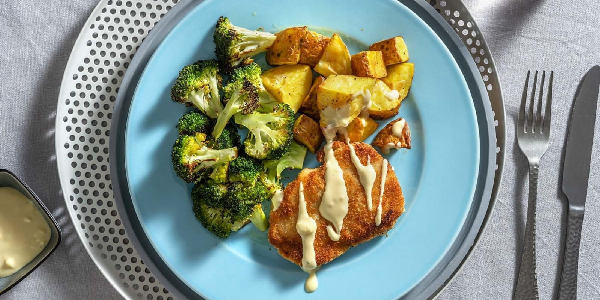

Bavarian Pork Chops with Roasted Potatoes and Remoulade

Description
We’re adding a little twist to the traditional schnitzel by using juicy pork chops and topping them with homemade garlic remoulade. Roasted potatoes and broccoli add a filling and crisp finishing touch.
Nutrition Info
Prep & Cook: 30 mins
Servings: 2
Ingredients
Pork Chops, 285 g
Broccoli Florets, 227 g
Yellow Potatoes, 300 g
Mayonanaise, 115 g
Garlic, Cloves, 1-3
Dijon Mustard, 10 g
Breading Blend, ¼ cup
Cooking Oil, 3 tbsp
Salt & pepper, to taste
Steps
Preheat the oven to 450°F. Start the recipe when the oven is ready. Read the entire recipe card. Wash and dry all produce. Cut broccoli into 1-inch pieces. Cut potatoes into 1-inch pieces. Mince garlic cloves.
Prepare two parchment-lined baking sheets. To one sheet, add potatoes and 1 tbsp oil (double for 4 portions). Season with salt and toss to coat. Arrange in an even layer. Bake on the lower rack of oven for 22-26 min, until crisp on the outside and tender on the inside.
While potatoes roast, to the second sheet, add broccoli and 1 tbsp oil (double for 4 portions). Season with salt and pepper. Toss to coat. Roast on the upper rack of oven, for 10-12 min until tender, tossing halfway through cooking.
While broccoli and potatoes roast, pat pork dry with paper towel, then season with salt and pepper. Add ½ tsp mayonnaise to each piece of pork and rub to coat. In a medium bowl, add Breading Blend, then pork chops, one at a time, turning to coat all sides. Discard any excess Breading Blend. In a large non-stick pan, heat 1 tbsp oil (double for 4 portions) over medium heat. When the pan is hot, add pork. Sear, for 4-5 min on one side, until golden. Add another 1 tbsp oil (double for 4 portions) then flip pork and sear, for 2-3 min, on the other side, until golden and cooked through.
While pork cooks, in a small bowl, whisk together mustard, remaining mayonnaise, garlic (use 1-3 cloves) and 1 tbsp water (double for 4 portions). Season with salt and pepper. Serve pork with roasted potatoes and broccoli alongside. Drizzle garlic remoulade over top. Enjoy!
Nutrition Facts
Per Serving: 790 calories; protein 42g; carbohydrates 47g; fat 64g; saturated fat 10g; cholesterol 50mg; sodium 930mg, fiber 7g; sugar 4g. Full Receipe Facts